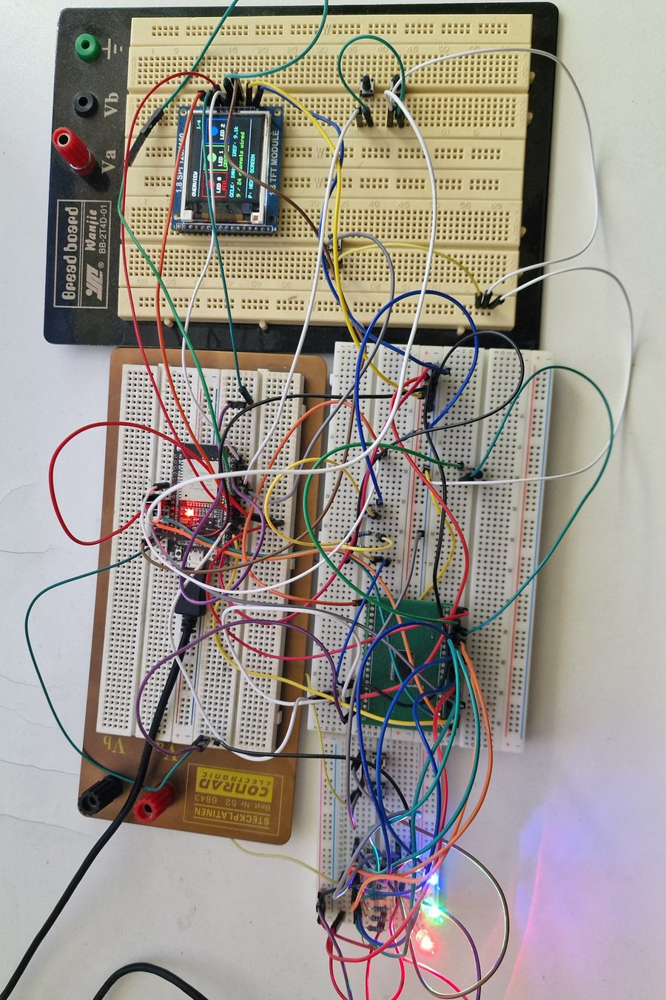
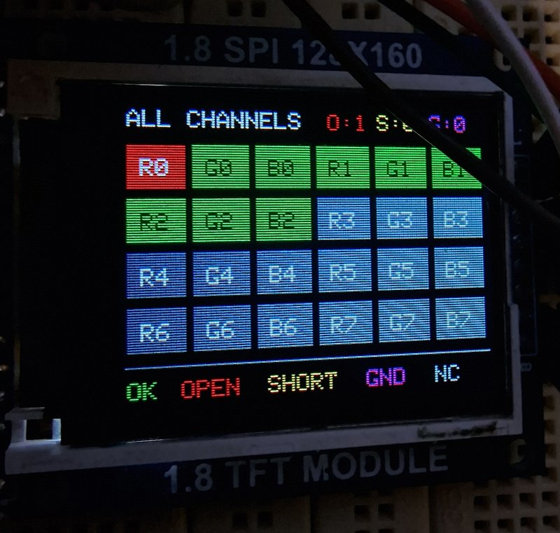
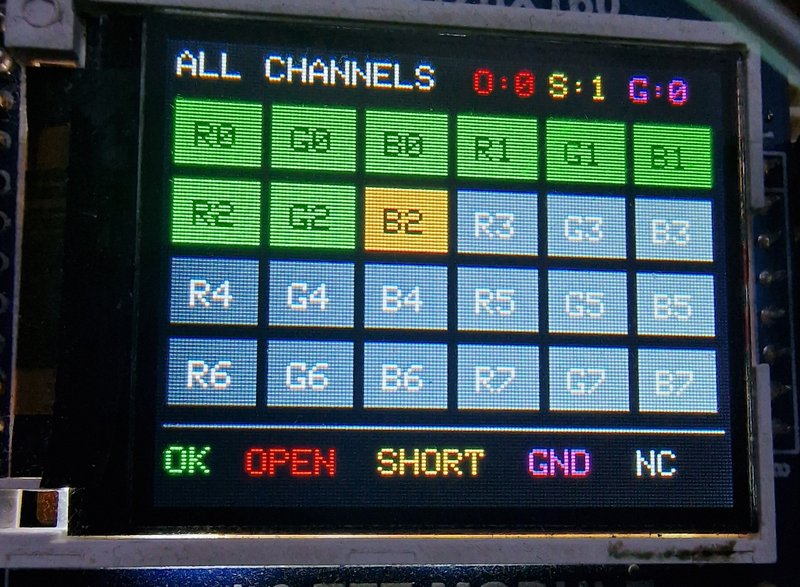
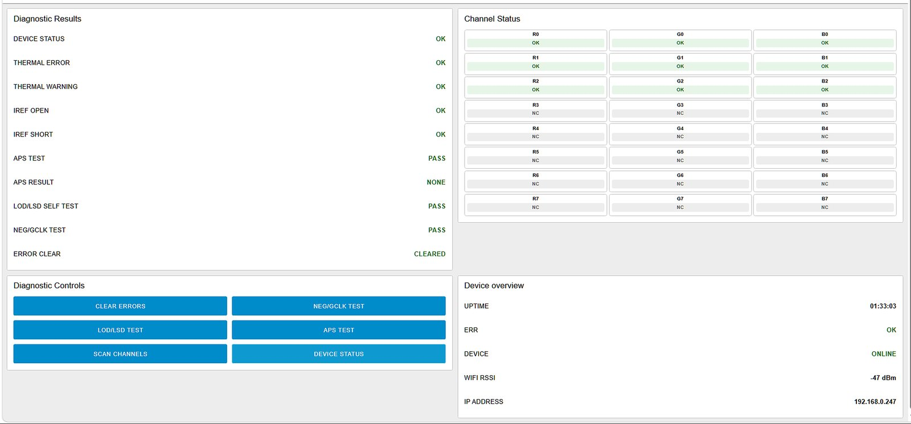
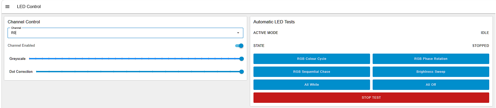
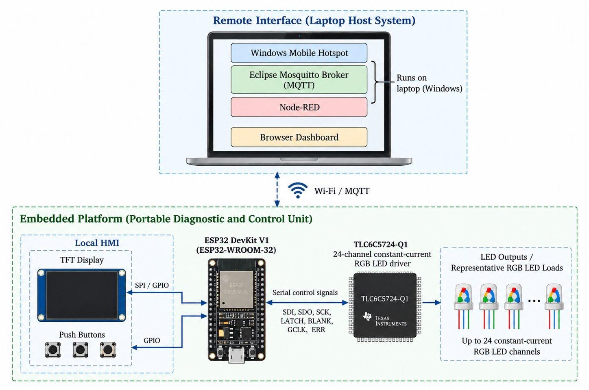

Portable Automotive RGB Lighting Diagnostic Platform
A portable test and control unit for the Texas Instruments TLC6C5724-Q1, a 24 channel constant current RGB LED driver for automotive lighting. An ESP32 drives every output, runs the driver's built-in diagnostics, and reports faults on a local TFT screen and on a Node-RED dashboard over MQTT.
My part: all of the firmware, the diagnostics, the MQTT and Node-RED side, the validation with injected faults, both reports, and the TLC breakout PCB in KiCad. A teammate built the main hardware and drew the system schematic.
- The driver interface is bit-banged on GPIO on purpose, so the LATCH timing is exact and easy to debug. The 1 MHz grayscale clock comes from the ESP32's LEDC hardware.
- The main loop never blocks. MQTT messages are stored as pending commands and run by the loop, and the automatic LED tests are a small state machine.
- The unit works without a network. If the broker disappears, it retries saved Wi-Fi profiles and returns to the preferred hotspot.
- Every diagnostic was tested with a fixed procedure: healthy baseline, power off, apply the fault, run the diagnostic, check, restore, clear, check again.
Result: open and shorted LEDs, shorts to ground, adjacent pin shorts, and open and shorted reference resistor faults were all detected as expected.
- Driver
- TI TLC6C5724-Q1, 24 channels, 12 bit grayscale
- Controller
- ESP32 DevKit V1
- Diagnostic functions
- 14
- Automatic LED tests
- 6
- Local interface
- 128 × 160 SPI TFT, three buttons
- Remote interface
- MQTT, Mosquitto, Node-RED Dashboard 2
- Board design
- TLC breakout PCB in KiCad











